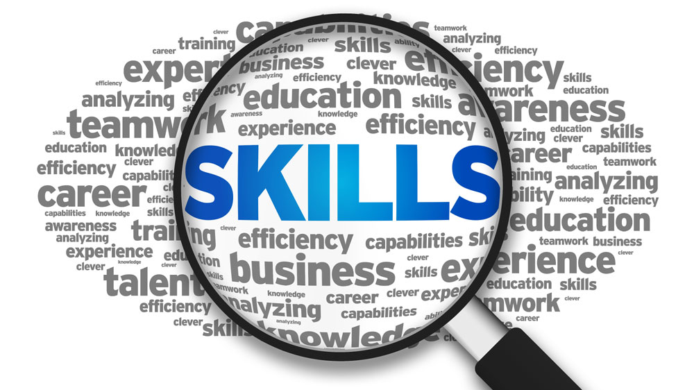

Skills development

Skills development is the process of identifying your skill gaps, and developing and honing these skills. It is important because your skills determine your ability to execute your plans with success. It identifies the gaps and develops the skills which enable the person to achieve their goals. Improve the ability of human being to perform a job related activity, which contributes to the effective performance of a task. It could be a form of intimacy where knowledge learned through detailed and repeated experience. A right set of skill is mandatory to proceed in the right direction that will lead to accomplishing your aim.Lack of skills is also the reason behind your frustration when you will not be able to succeed and unnecessarily waste your time.When someone gets mastery in their skill, it is the result of the hard work of countless hours.
Skill development has been considered one of the critical aspect for job creation in India. Most of your skills can transfer to new opportunities. If you are not skilled enough with a certain skill set, you will not be qualified for any of the available jobs.This can lead to unemployment.Acquiring a skill is an investment in one's life and future. It opens up all sorts of employment opportunities and helps to create a sense of fulfilment. It is important to understand that knowledge doesn’t guarantee skill, practice does. Theory knowledge can give an imaginative structure but only practical knowledge can give a real exposure. Books are sufficient to throw light through someone else thought process but if you need to create own empire student need to come out of their comfort zone and implement their knowledge into the real world.
Transferrable skills are professional skills that can be used across a range of different careers and professions.

Personal skills are skills that could also be considered personality traits. They require emotional intelligence and reflect how you behave yourself in a range of situations.
Knowledge-based skills are skills developed for your particular profession. They reflect your ability to complete various tasks in your job.
Soft skills are subjective skills. They are not measured, taught, or required for any specific job. This category generally overlaps with the ‘personal skills’ and ‘transferrable skills’ categories in the 3-skill taxonomy.
Hard skills are objective skills. They’re measurable and required for a specific job. They generally fit into knowledge-based skills category.

students develop all 3 types of skills in the 3-skill taxonomy. While the curriculum tends to focus on knowledge-based skills, students also develop the other skills throughout the day.
For example: when placed in teams and groups, students are focusing on developing transferrable skills like communication, negotiation, and delegating.
